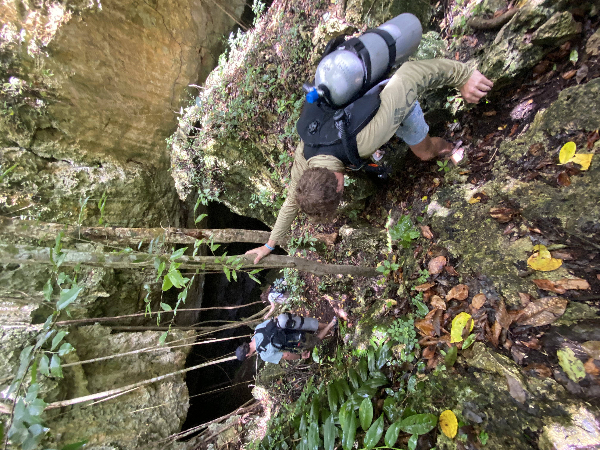
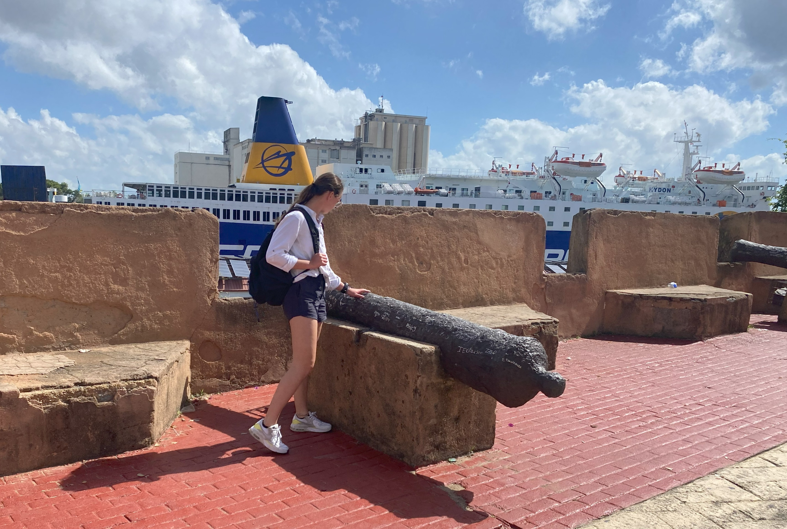
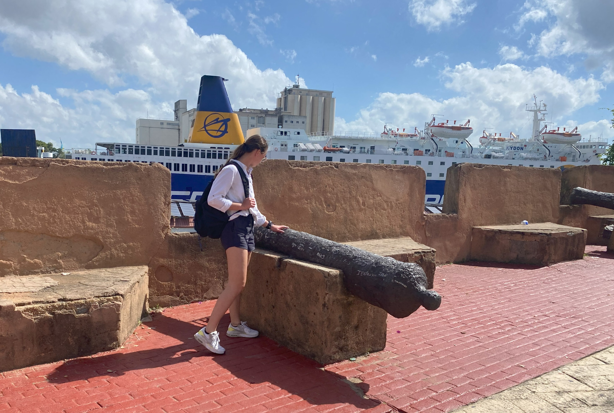

The Dominican Republic Chronicles
I was fortunate enough to participate in four research trips to the Dominican Republic as a part of the IU Center for Underwater Science. This post summarizes the efforts of all of these trips.
 As a student at IU in the Underwater Science program, I had definitely drank the kool-aid that director Charles Beeker had fed us. He sat all of the undergrads that were selected to go on the trip down at a pre-departure meeting in March of 2022 to discuss how this trip is important for the ongoing research of the Center and collaboration between US institutions and the Dominican government. And, that this experience is one of only a handful of opportunities in the country where undergrads can get scientific diving experience, diving for data collection and monitoring of 16-18th century shipwrecks. While he wasn’t wrong about both points, I’ve had enough trips both as a student and as a faculty member under my belt after leaving IU knowing that these yearly meetings were less to showcase the influence of the Center and more to keep us on our best behavior as we stayed at an all-inclusive resort during the 10 day field project, which, for newly 21 year olds, can be tempting… not that I would know.
As a student at IU in the Underwater Science program, I had definitely drank the kool-aid that director Charles Beeker had fed us. He sat all of the undergrads that were selected to go on the trip down at a pre-departure meeting in March of 2022 to discuss how this trip is important for the ongoing research of the Center and collaboration between US institutions and the Dominican government. And, that this experience is one of only a handful of opportunities in the country where undergrads can get scientific diving experience, diving for data collection and monitoring of 16-18th century shipwrecks. While he wasn’t wrong about both points, I’ve had enough trips both as a student and as a faculty member under my belt after leaving IU knowing that these yearly meetings were less to showcase the influence of the Center and more to keep us on our best behavior as we stayed at an all-inclusive resort during the 10 day field project, which, for newly 21 year olds, can be tempting… not that I would know.
Despite the Center being an underwater archaeology program, my heart always lied in the ecology of coral reefs. Additionally, I was interested in learning photogrammetry techniques that were employed in our case for shipwreck monitoring, but also are used in temporal observational studies of coral reefs. Thus, for my first trip, Dr. Beeker had assigned me to the Dendrogyra cylindrus monitoring project. Of course, I was ecstatic to be getting field experience, to be leading scuba diving operations as a newly certified dive master, but also to be able to employ some of the knowledge I now knew about coral biology from my internship at Mote and history of coral reefs course at IU. This project is a part of a long-term monitoring program that the Center began in 2018. So, while it hasn’t been going on for very long, the hopes is that after 10+ years we can track changes in coral cover and help assist the Domincian Government in implementing management practices. I was very happy to have the invaluable field work experience. Unfortunately, during my four trips to the DR, I witnessed stony coral tissue loss disease (SCTLD) sweep through the area and ravage coral communities. Of the 14 known mature colonies of D.cyl in just a 400 x 200m area, almost all of them succumbed to the disease. If you have a background in coral biology, then you know that this species is already very rare, so to have a density this large is almost unheard of anywhere else in the Caribbean. Thus, it makes this progression even more of a blow to the coral restoration community.


Left image is Dendrogyra cylindrus colony #3, “Emma’s colony” pre-SCTLD in May of 2022. Right image is in active SCTLD November of 2022.
Since I was one of a few bio people on the trip, my project didn’t last more than the first three days of the trip, and we were off to other archaeological sites for monitoring and rapid assessment of their condition. This includes shipwrecks off the coast of DR, but also a freshwater rinse in the cavern systems in Parque Nacional Cotubanama and in the eastern tip of the island. These dives were a highlight of my first trip, and in years afterwards, was always a favorite part of first-time students trips as well. A grad student in the anthropology department who made her way through the Underwater Science program (and taught my advanced open water course), Kirsten, is conducting her dissertation research utilizing carbon dating of pottery sherds discarded by the indigenous Taíno peoples in these caverns. These underground submerged cave and cavern systems are numerous in the Yucatan Peninsula, Greater Antilles, and Florida due to  the geological history of the Caribbean. It’s theorized that the Taíno people viewed these submerged caves as a gateway to their watery underworld, in addition to being vital for providing fresh water. Thus, many sacrifices were made to cave and cavern systems all throughout Hispaniola consisting of pottery, wooden bowls and utensils, and even wooden clubs. While we did not help Kirsten with data collection of artifacts from these caverns, we were able to tour them and their extremely rich history. It was a very humbling experience to see the underwater realm that the Taíno peoples treated with such respect and gratitude. If you would like to learn more about the rich history of the Taíno people’s history and meeting with European colonizers, you can learn more on the IU Underwater Science website..
the geological history of the Caribbean. It’s theorized that the Taíno people viewed these submerged caves as a gateway to their watery underworld, in addition to being vital for providing fresh water. Thus, many sacrifices were made to cave and cavern systems all throughout Hispaniola consisting of pottery, wooden bowls and utensils, and even wooden clubs. While we did not help Kirsten with data collection of artifacts from these caverns, we were able to tour them and their extremely rich history. It was a very humbling experience to see the underwater realm that the Taíno peoples treated with such respect and gratitude. If you would like to learn more about the rich history of the Taíno people’s history and meeting with European colonizers, you can learn more on the IU Underwater Science website..
The main priority of these research trips shifted from my first to last trip, from monitoring existing archaeological sites to evaluation of an unidentified 16th century shipwreck off the coast of Cap Cana, we now refer to as the Punta Espada shipwreck. My good friend and anthropology PhD student at IU, Sarah’s dissertation will revolve  around identifying the wreck. This has proven to be much more difficult than previously anticipated, because the wreck was looted by treasure hunters before we were allowed access to the site. Thus, while there are artifacts housed in the Museo De Las Atrazanas Reales (Royal Shipyards Naval Museum), Sarah and her team haven’t yet found a “smoking gun” artifact. We’ve attempted to collect as much information from the site as possible, including detailed measurements of the anchor of salvation and many compacted bombards on the site. Additionally, there’s been many artifacts that the Museum and the DGPCS have housed from the wreck, including nested weights with makers marks that help to show where the ship might have gotten it’s cargo from in Europe, pewter dishware, and other artifacts. Work on this project allowed me to assist with artifact restoration both in the lab at IU and in Dominican Republic using electrolysis and other cleaning tools. I also was able to dive extensively on the site, conducting a biological survey of the many healthy Acropora palmata colonies on the site and aid in a small restoration project of outplanting palmata fragments back to the site. We also took several trips to the captiol, Santo Domingo, to visit with government agencies and review other artifacts related to the wreck.
around identifying the wreck. This has proven to be much more difficult than previously anticipated, because the wreck was looted by treasure hunters before we were allowed access to the site. Thus, while there are artifacts housed in the Museo De Las Atrazanas Reales (Royal Shipyards Naval Museum), Sarah and her team haven’t yet found a “smoking gun” artifact. We’ve attempted to collect as much information from the site as possible, including detailed measurements of the anchor of salvation and many compacted bombards on the site. Additionally, there’s been many artifacts that the Museum and the DGPCS have housed from the wreck, including nested weights with makers marks that help to show where the ship might have gotten it’s cargo from in Europe, pewter dishware, and other artifacts. Work on this project allowed me to assist with artifact restoration both in the lab at IU and in Dominican Republic using electrolysis and other cleaning tools. I also was able to dive extensively on the site, conducting a biological survey of the many healthy Acropora palmata colonies on the site and aid in a small restoration project of outplanting palmata fragments back to the site. We also took several trips to the captiol, Santo Domingo, to visit with government agencies and review other artifacts related to the wreck.
Check out this Video that Sam Arvin made from our 2022 trip:
Image Gallery:

 


 


Images courtesy of myself (on iphone, GoPro Hero 10, 35mm film camera), Ben Rygiel, Samuel Haskell, and Bob Kessler